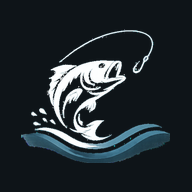

Angel-Log0 %

Angel-LogWozu das gut ist
Eine Auswertung zeigt, unter welchen Bedingungen deine Fänge bisher zustande kamen — bei welchem Luftdruck, zu welcher Uhrzeit, bei welchem Mond, an welchem Köder. Wer das ein paar Saisons lang führt, sieht sein eigenes Muster statt der Faustregeln aus dem Internet.
In vier Schritten gebaut
Das Bild ändert sich sofort mit. Passt es, legt „Auswertung speichern" es unter einem Namen ab — gespeicherte stehen darunter und werden bei jedem neuen Fang mitgerechnet.
⚠️ Was hier nicht steht: wie gut es beißt
Gezählt werden nur Fänge — Ansitze ohne Fang trägt die App nicht ein. Ein hoher Punkt heißt also „so oft hast du hier gefangen", nicht „hier fängst du am besten". Wenn du meistens samstags morgens losziehst, wird Samstagmorgen zwangsläufig dein bester Wert.
Etwas geht nicht oder sieht falsch aus? Schreib es auf — auch ohne Netz. Die Meldung wartet dann im Gerät und geht beim nächsten Abgleich raus.
Ein paar technische Angaben gehen automatisch mit — was genau, steht in der Datenschutzerklärung weiter unten.
Sobald jemand auf deine Meldung antwortet, bekommst du eine Nachricht aufs Gerät — auch wenn die App zu ist. Sonst siehst du die Antwort erst, wenn du das nächste Mal ins Postfach schaust.
Für diese Seite stehen sie auf „nicht erlauben". Das kann die App nicht selbst ändern, nur du im Browser: am Rechner auf das Zeichen links neben der Adresse tippen und Benachrichtigungen erlauben, am iPhone unter Einstellungen → Mitteilungen → Angel-Log.
Die Einstellung gilt nur für dieses Gerät.